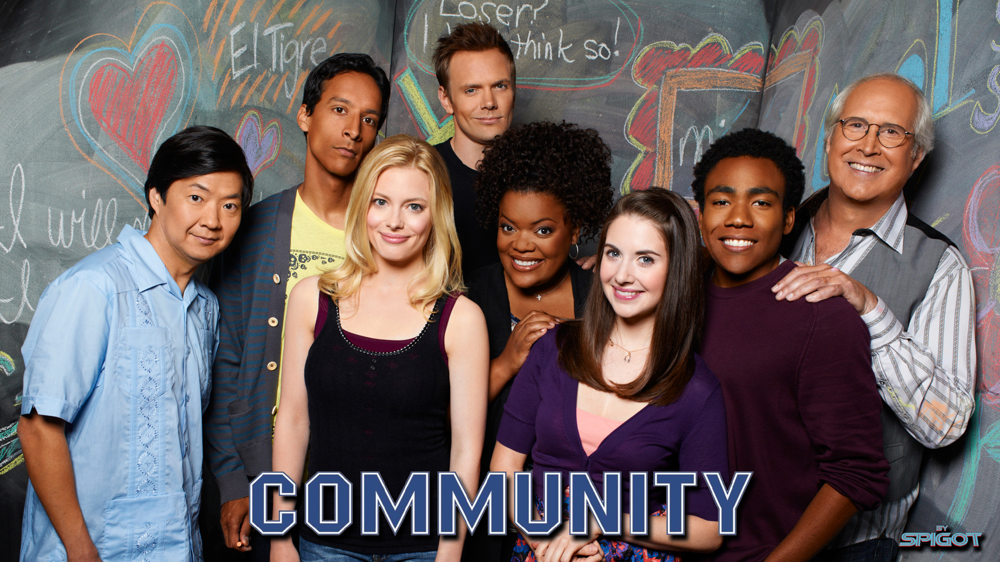

Community is a game changing sitcom created by Dan Harmon (yes the Rick and Morty guy) than ran for 6 Seasons from 2009 to 2015
Community began life as just another sitcom on NBC, created by Dan Harmon the show followed the exploits of a collection of flawed but lovable misfits in a community college.
The show quickly grew into one of the most different and subversive sitcoms of all time thanks to Dan Harmon's inablity to make standard, regualar or cookie cutter tv shows plus his deep love for genre homages.
The show had a strong cult following for years, recieving critical acclaim but never pulling in big ratings, fans fell in love with the ensemble cast and the extraordinary chemistry between them all.
I have always maintained that Community is the most unique sitcom of all time and is an incredible love-letter to anyone who has a love for media.
The show and its fans fought through two cancellations to make six seasons (Community fans dont mention season four) and left behind a strong legacy for its fans.